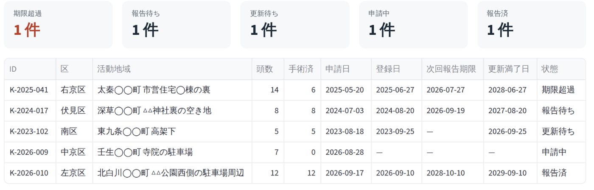
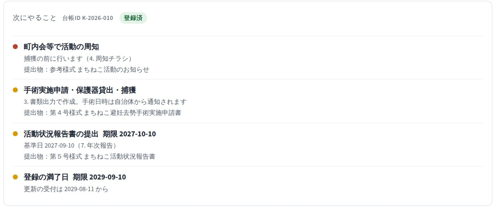
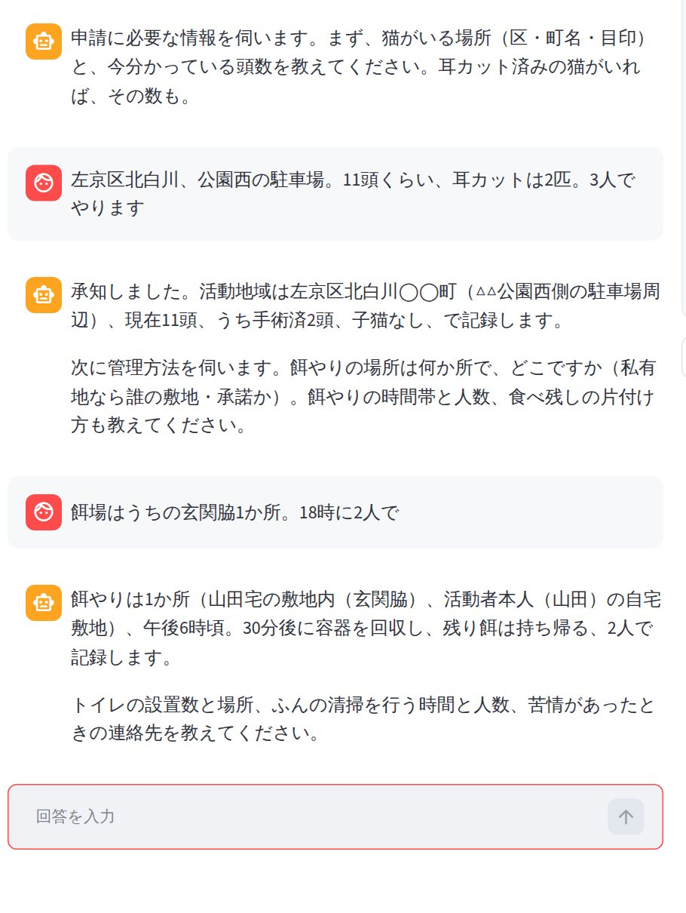
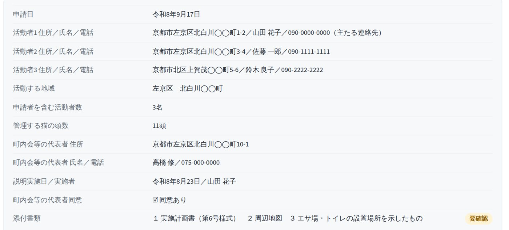
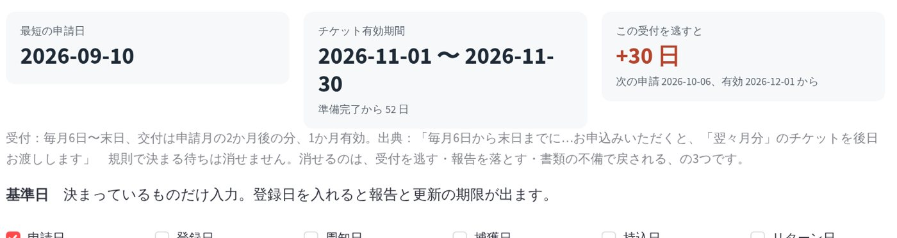
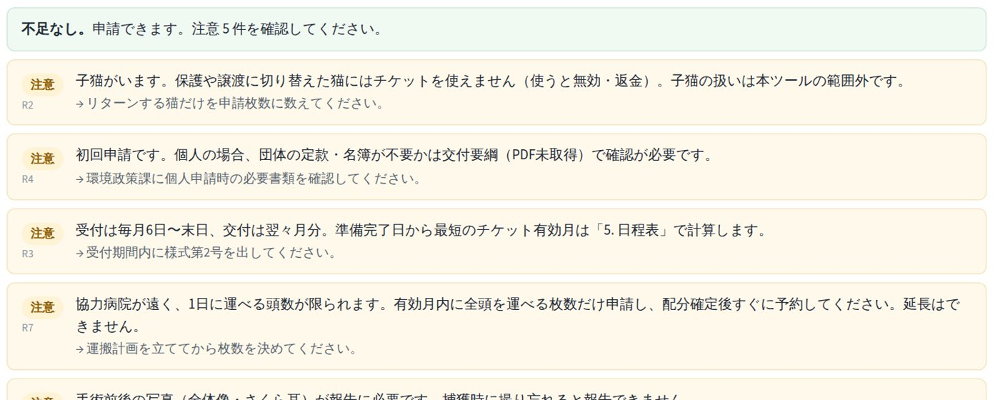
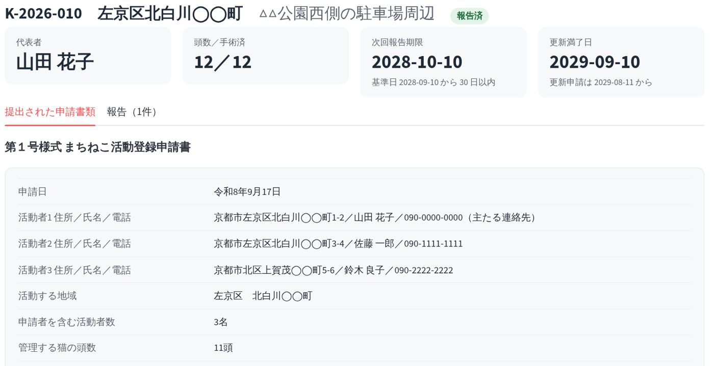
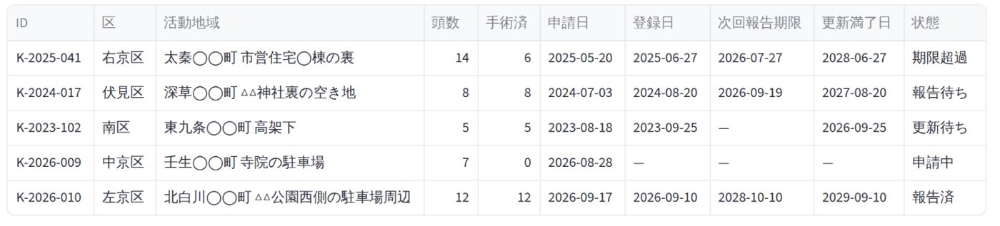

会話で状況を入れると、次にやることと書類が出て、市の台帳に残る。
①担い手が話す

「左京区、11頭くらい、3人でやります」と話す。AIが要綱に照らして返す
②AIが要綱を読んで組み立てる

「次にやること」と、埋まった第1号様式
③市に残る


K-2026-010 が「申請中」で台帳に載り、報告後に「報告済」になる
プロトタイプ（Streamlit）。京都市・高島市の2自治体で動作。画面はすべて実機。2
VORN Challenge 2026 応募作品
【製品名】 ── 地域猫活動の申請・日程・報告を、担い手に代わって回す
チーム【チーム名】

市民面：開くと「次にやること」が出る
「左京区、11頭くらい、3人でやります」と話す。AIが要綱に照らして返す
「次にやること」と、埋まった第1号様式

K-2026-010 が「申請中」で台帳に載り、報告後に「報告済」になる
94 → 1,612年間の手術頭数（H22 → R1）
5,169 → 3,715路上死亡の猫（H26 → R1）
1,470 → 685苦情件数（H21 → H25年度）
−44%センター収容の所有者不明猫
京都市まちねこ活動支援事業（平成22年度開始）の10年評価より。収容される猫の多くは生まれたばかりで自活できない子猫。
10.0% ＞ 8.6%活動しているのに制度を知らない（35件） ＞ 知っている（30件）。福岡県調査
3年横ばい京都市の活動中地域数。毎年新規はあるのに増えない。10年評価
場所と頭数を会話で入れると、その自治体の要綱を読んで「使える制度・条件・次の受付・必要書類」を返す。様式を埋め、日程を組み、期限が来れば促し、報告を出す。
AI の役割
自治体ごとに違う自然言語の要綱を、個別の事情に翻訳し、追い続ける
登録コロニーの状態と期限が一覧になる。申請と報告の副産物として残るので、担い手が代わっても市に情報が残る。届いた申請の不備が減る。
やらないこと担い手を増やさない。捕獲しない。説得しない。制度と担い手の間の、時間と引継ぎの摩擦だけを消す。
0になるもの日程逆算、書類、規約適合チェック、期限管理、記録。
0にならないもの捕獲の腕、深夜の授乳、対面の説得。
→ 以下、市民面を画面で証明する。

入力は自然文。要綱の条件は AI 側が持つ。集めるのは第1号様式・第6号様式に必要な項目だけで、それ以外は聞かない。
捕獲の手順・自治会の説得・里親探し・子猫の育て方を聞かれると「範囲外」と断る。

何を・いつまでに・様式は何。台帳の状態が変わると項目が入れ替わる。提出前は「提出」、登録後は「周知」「手術申請」「報告」「更新」。

画面上の項目一覧。「要確認」は記載例と照らして確認が要る欄。担い手は印刷して出すだけ。
技術 条文から受付日・有効期限・必要人数・必要書類・報告期限を抽出し、日付計算だけコード側。プロファイル（要綱一式のフォルダ）差し替えで別自治体。規則はコードに1行も書かない。
事業 協働自治体は298、要綱はすべて違う。1自治体数十〜数百人では個別開発が成立しない。だから誰も作らなかった。要綱を読む部分をAIに置くと、1本のシステムで全自治体を扱える。


高島市：準備完了日を入れると、受付期間（毎月6日〜末日、翌々月分）から最短の申請日とチケット有効期間が出る。受付の値は市HP本文から抽出。高島市の交付要綱PDFは未取得。
状態は要綱の期日ルールと報告履歴から計算。並び順は 期限超過 → 報告待ち → 更新待ち → 申請中 → 報告済。台帳の他4件はダミー。

引継ぎのために別途入力させるものではない。申請と報告の副産物として残る。
活動地域数「3年横ばい」の中身（終了か脱落か）が初めて分かる。廃止届（第3号様式）には理由欄があるが、届出なしで切れた地域の理由は今は残らない。

画面はすべて実機。市の職員が「登録する」を押すと登録日が入り、次にやることに「周知」「第4号様式」「報告期限」「満了日」が並ぶ。台帳の他4件はダミー。
| 変わること | 指標 |
|---|---|
| 受付を逃さないので、手術が繁殖期に間に合う | 申請から手術までの日数 |
| 報告・更新を落とさない | 登録の継続率（職権抹消の減少） |
| 担い手が代わっても市に情報が残る | 引継ぎ後に活動が継続した地域数 |
| 市は不備のない申請だけ受ける | センター収容の子猫数（京都市10年評価と同じ系列） |
事業の効果（収容減・苦情減）をツールの効果として語らない。ツールは事業を速く広く回せるようにするまで。測れない指標は置かない。
規則で決まる待ちは消せない。消せるのは、受付を逃す・報告を落とす・不備で戻される、の3つ。
【役割】
【役割】
【役割】
【役割】
技術構成 Python／Streamlit／Anthropic API（Claude）／python-docx。京都市・高島市の2プロファイルで動作。要綱の規則はコードに書かず、資料フォルダから毎回抽出。日付の計算だけコード側。
限界 当事者ヒアリングは未実施（通過後に京都市医療衛生センター・どうぶつ基金へ）。高島市は市HP本文から抽出しており、交付要綱PDFは未取得。実 API での応答品質は検証中で、掲載画面はモック応答で撮影。
京都市（デモ対象）
まちねこ活動支援事業
https://www.city.kyoto.lg.jp/hokenfukushi/page/0000189400.html
要綱（令和6年4月1日改正）
https://www.city.kyoto.lg.jp/hokenfukushi/cmsfiles/contents/0000189/189400/yoko060401.pdf
第1号様式 …/touroku.docx／第6号様式 …/jissikeikaku.docx／記載例 …/rei_touroku.pdf, …/rei_jissikeikaku.pdf／参考様式 …/osirase.pdf（同ディレクトリ）
10年間の事業評価
https://www.city.kyoto.lg.jp/hokenfukushi/page/0000277536.html
京都市獣医師会
https://www.kyoto-shiju.or.jp/machineko.html
どうぶつ基金・基金型自治体
チケットFAQ
https://sakuraneko-tnr.doubutukikin.or.jp/faq
登録・チケット規約
https://sakuraneko-tnr.doubutukikin.or.jp/about/register
事業概要
https://www.doubutukikin.or.jp/activity/sakuraneko-surgery/
2022年度実績
https://www.doubutukikin.or.jp/activitynews/20230727/37090/
高島市 環境政策課
https://www.city.takashima.lg.jp/soshiki/kankyobu/kankyoseisakuka/2924.html
大網白里市
https://www.city.oamishirasato.lg.jp/0000014129.html
当事者の声・背景
福岡県 県民モニター調査（N=349。実施年は資料に明記なし、自由記述から2022年実施と推定）
https://www.pref.fukuoka.lg.jp/uploaded/attachment/186043.pdf
堺市（猫は法令上捕獲根拠がなく行政は収容しない）
https://www.city.sakai.lg.jp/kurashi/dobutsu/dogcat/komarigoto/inunekokomaru.html
環境省 犬・猫の引取り及び負傷動物の収容状況
https://www.env.go.jp/nature/dobutsu/aigo/2_data/statistics/dog-cat.html
数字の扱い
本資料の数字はすべて上記の一次情報から引用。事業の効果（収容減・苦情減）は京都市の事業の効果であり、本プロダクトの効果ではない。本プロダクトが変えるのは「申請から手術までの日数」「登録の継続率」「担い手交代後の継続」。
第2条⑵ 活動は、同一世帯員ではない地域住民２人以上（ただし、その管理する野良猫が１０頭以上の場合にあっては同一世帯員ではない地域住民２人を含む京都市民３人以上）による団体を構成して行うものであること。
第5条 「まちねこ活動登録申請書」（第１号様式）に、「まちねこ活動実施計画書」（第６号様式）及び次に掲げる事項を示した周辺地図を添えて、医療衛生センター長に提出するものとする。⑴活動地域の範囲 ⑵給餌の場所 ⑶野良猫用のトイレの場所
第5条3 登録の有効期間は、登録の日から３年間とする。
第6条2 登録を更新しようとする団体は、「まちねこ活動登録更新申請書」（第２号様式）及び「実施計画書」を、従前の登録の有効期間の満了の日の３０日前から満了日までに医療衛生センター長に提出するものとする。
第7条3 医療衛生センター長は、期限までに第６条の更新が行われなかったもの又は活動の実態が認められない若しくは効果がないと思料するものについて、まちねこ活動団体に、第１項に規定する届出を行うよう求め、又は必要な調査を行ったうえ職権で登録を抹消することができる。
第9条 まちねこの避妊去勢手術を依頼しようとするときは、まちねこ避妊去勢手術実施申請書（第４号様式）を医療衛生センター長に提出するものとする。
第10条 避妊去勢手術の実施の日時は、動物愛護センターが医療衛生センター長を通じ、まちねこ活動団体に通知する。
第12条 まちねこ活動団体は、１年ごとに、医療衛生センター長に対して、「まちねこ活動状況報告書」（第５号様式）を提出し、まちねこの管理の状況について、報告しなければならない。
第12条2 前項に規定する報告は、登録をした日の属する年の翌年以降、毎年、登録した日と同月日から３０日以内に行うものとする。
様式一覧 第1号 登録申請書／第2号 登録更新申請書／第3号 廃止届出書／第4号 避妊去勢手術実施申請書／第5号 活動状況報告書／第6号 活動実施計画書／参考様式 近隣の皆さまへ（お知らせ）
記載例の注記（R6.4.1〜） 代表者の署名・押印不要。管理する猫が10頭以上の場合、地域住民2名以上のほかに京都市民1名以上の登録が必要。3人目の活動者は同一町内でなくとも可。